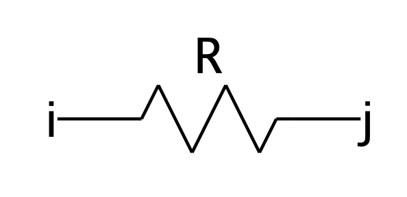
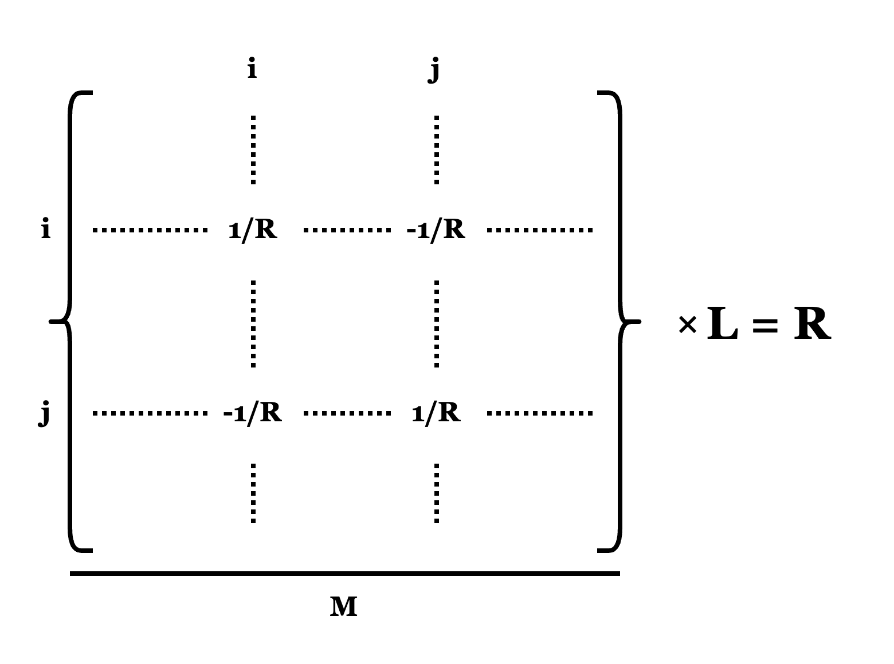
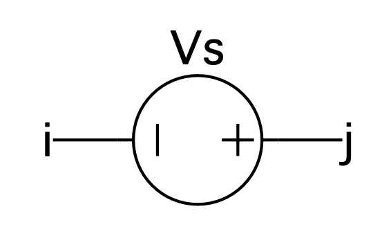
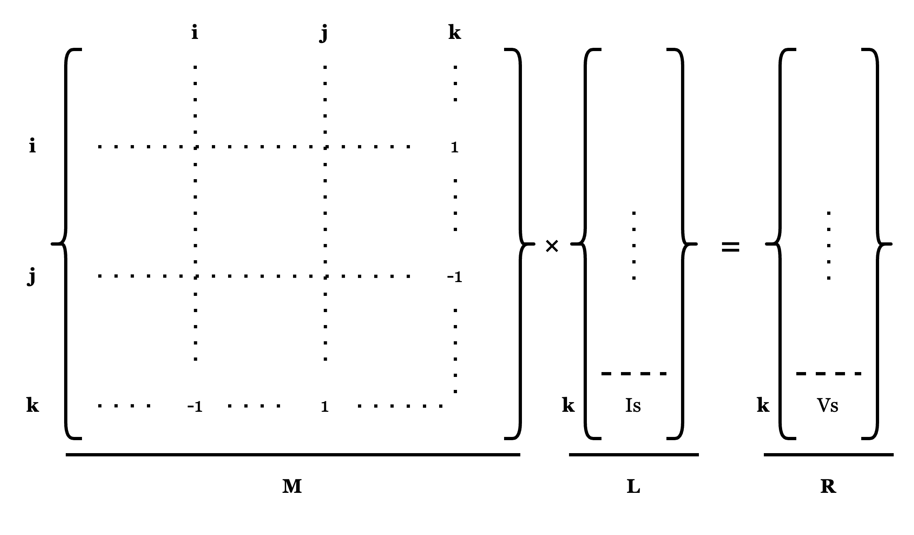
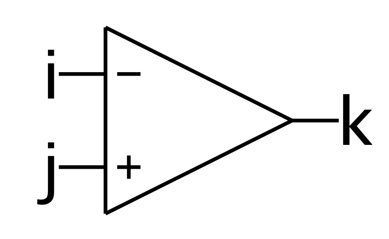
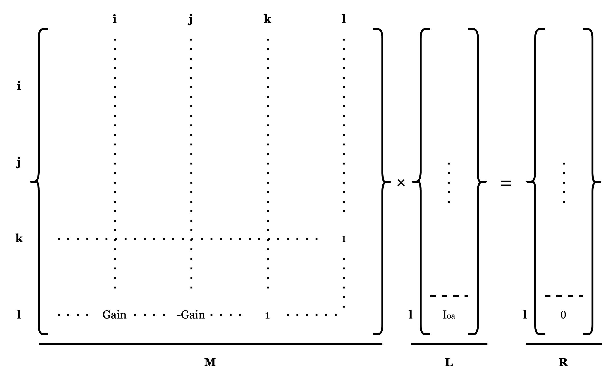
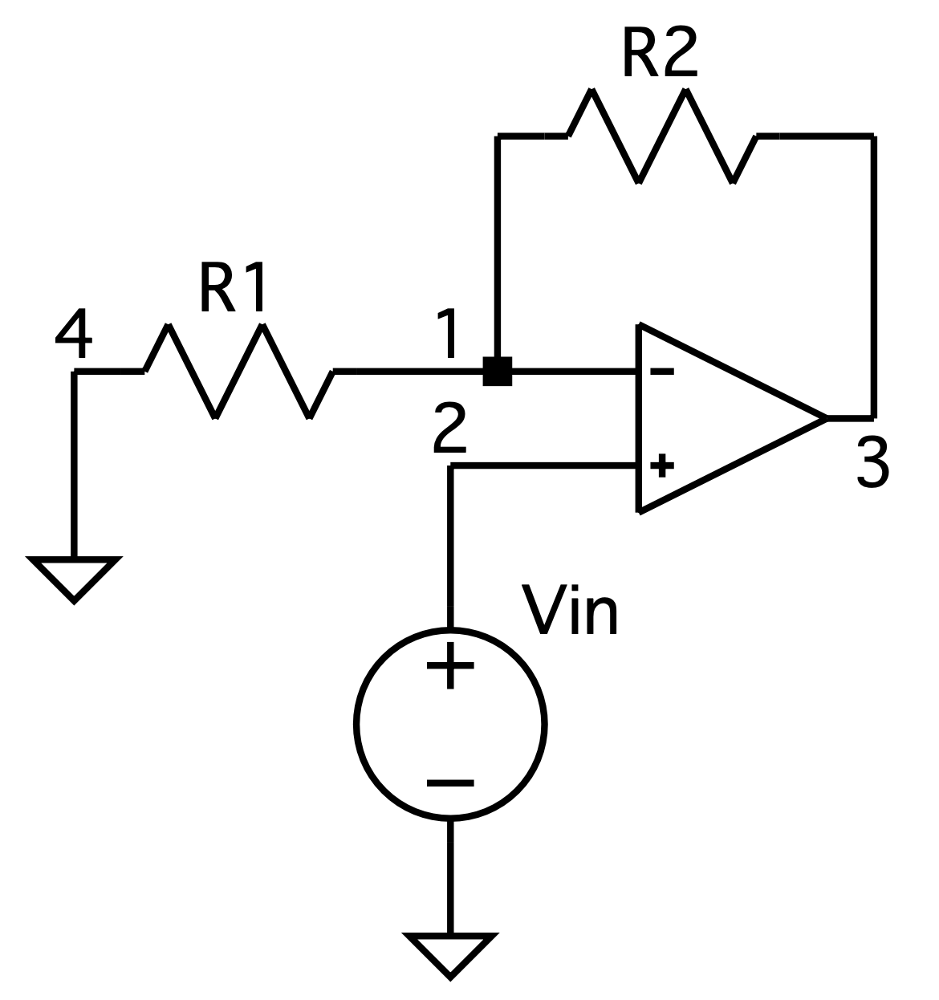
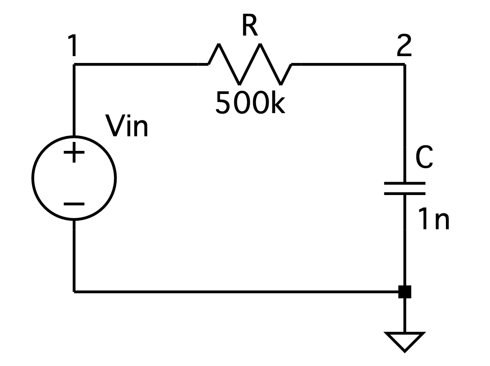
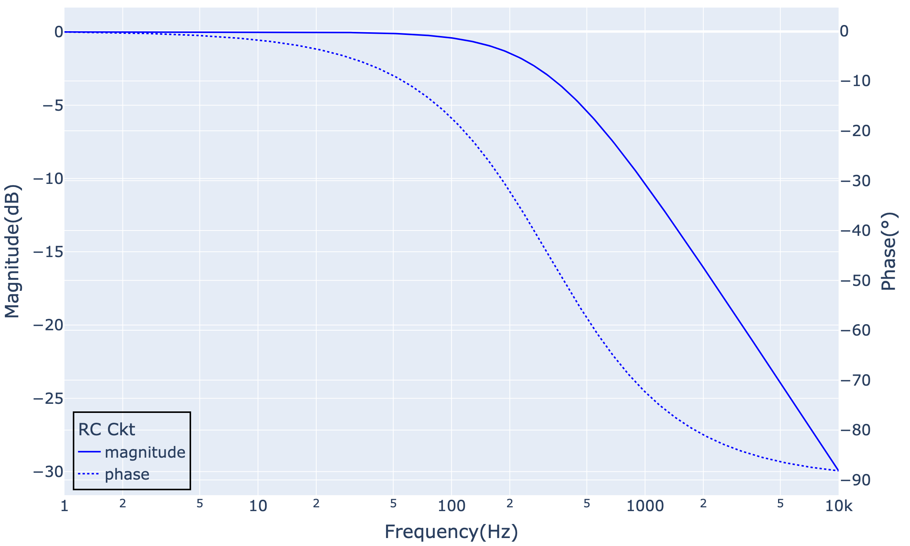

使用python实现简单的电路频响分析工具
本文将使用python实现一个工具，完成类似SPICE的AC Analysis的功能。此外，我们尝试使用该工具生成TS808 Tone部分电路的频响曲线，并提供一定交互性以更好地观察和理解TS808 Tone部分的特性。
初衷 - 棘手的TS-808 Tone部分
对于TS-808的原理，网上已有不少文章进行了讲解。然而，对于Tone部分（即Tone旋钮涉及的电路），我看到的一些资料都使用了比较简易的分析方法，即分析Tone旋钮为0以及Tone旋钮打满的两种情况。（以下图片摘自electrosmash.com）
那么，旋钮在0到10之间任何一个中间状态时应该如何分析？这时，我们可以基于理想运放的特性，去手算上述电路的transfer function。
可以肯定的是，这不会是一个轻松的过程。等待你的是无尽地等式书写和来回比较是否出现笔误。等到算出最终结果的时候，你很难说服自己中间有没有计算错误，因为结果看起来真的有点复杂。
如果你对该电路的transfer function感兴趣的话，Yeh博士在他的论文DIGITAL IMPLEMENTATION OF MUSICAL DISTORTION CIRCUITS BY ANALYSIS AND SIMULATION中的2.4.3节给出了结果，下面的图片摘自这一部分。
那么，除了计算transfer function，有没有其他方法能够分析电路的频响特性呢？这个方法既不像手算transfer function如此考验耐心，此外也可作为一个验证手算的transfer function是否正确的工具。
答案是有的。这个方法就是SPICE中的AC Analysis。
Nodal Analysis和Modified Nodal Analysis
介绍AC Analysis之前，我们需要了解一个名为Nodal Analysis的概念，这是一个用于求解电路上某个节点的电压的方法，它将其转化为方程组求解的问题。我们先来看以下场景：
为了求得节点1和节点2的电压，我们结合欧姆定律和基尔霍夫电流定律：
\((V_1-V_2)/R_1 = I_s\) （节点1）
\((V_2-V_1)/R_1 + V_2/R_2 = 0\) （节点2）
上述两个等式可看作是二元一次方程组，其中\(V_1\)和\(V_2\)为未知数。我们转换为矩阵形式。
\(\begin{pmatrix} 1/R_1 & -1/R_1 \\ -1/R_1 & 1/R_1+1/R_2 \end{pmatrix} \begin{pmatrix} V_1 \\ V_2 \end{pmatrix} = \begin{pmatrix} I_s \\ 0 \end{pmatrix}\)
总之，对于节点电压，基本的求解方法为：首先将电路中除了接地以外的所有节点根据欧姆定律和基尔霍夫电流定律得到等式，然后所有等式形成方程组，最后求解方程组。
这种分析和求解方法被称为Nodal Analysis。
下面我们再来看一个电压源的例子：
与电流源场景不同，这个场景中除了三个节点的电压为未知数以外，电压源的存在引入了新的未知数，即电压源本身的电流（下面标为\(I_s\)）。不过，电压源本身也提供了\(V_1\)和\(V_3\)之间的电压差信息。于是我们可以得到一个四元一次方程组：
\((V_1-V_2)/R_1 - I_s = 0\) （节点1）
\((V_2-V_1)/R_1 + V_2/R_2 = 0\) （节点2）
\(V_3/R_3 + I_s = 0\) （节点3）
\(V_1 - V_3 = V_s\)（电压源信息）
其矩阵形式如下：
\(\begin{pmatrix} 1/R_1 & -1/R_1 & 0 & -1 \\ -1/R_1 & 1/R_1+1/R_2 & 0 & 0 \\ 0 & 0 & 1/R_3 & 1 \\ 1 & 0 & -1 & 0 \\ \end{pmatrix} \begin{pmatrix} V_1 \\ V_2 \\ V_3 \\ I_s \\ \end{pmatrix} = \begin{pmatrix} 0 \\ 0 \\ 0 \\ V_s \end{pmatrix}\)
这个方法被称为Modified Nodal Analysis，是Nodal Analysis方法的延伸。后续我们主要基于该方法得到电路的频响信息。
电路元件在Modified Nodal Analysis中的表达
由上述Modified Nodal Analysis的例子可以看到，其核心在于根据各个节点连接的元件构造多元一次方程组并求解。这里，我们习惯将方程组写为矩阵形式：
- \(\mathbf{M}\)为矩阵，包含各个元件的电导信息
- \(\mathbf{L}\)为向量，包含待求解的节点电压和电压源的电流。
- \(\mathbf{R}\)为向量，包含节点的电流信息和电压源的电压信息
下面我们阐述各个元件如何应用到\(\mathbf{M}\)、\(\mathbf{L}\)以及\(\mathbf{R}\)中。
电阻
假设有下述场景，节点i和节点j之间有电阻R。

根据前述的几个例子我们可知，电阻R对节点i和节点j有如下影响：
- 对于节点i，电阻R使其流出\((V_i-V_j)/R\)的电流，相当于对矩阵\(\mathbf{M}\)有如下操作：
- \(\mathbf{M}_{ii}\) += \(1/R\)
- \(\mathbf{M}_{ij}\) += \(-1/R\)
- 对于节点j，电阻R使其流出\((V_j-V_i)/R\)的电流，相当于：
- \(\mathbf{M}_{jj}\) += \(1/R\)
- \(\mathbf{M}_{ji}\) += \(-1/R\)
总之，\(\mathbf{M}\)、\(\mathbf{L}\)、\(\mathbf{R}\)有如下形式：

在频域中，电容和电感可表示为阻抗形式，因此频域下这两者处理方式与电阻一致。
电压源
由前述电压源的电路例子可知，电压源会引入了新的未知数，由此影响\(\mathbf{M}\)、\(\mathbf{L}\)、\(\mathbf{R}\)三者的尺寸。另外，电压源又提供了两个节点的电压差信息。
我们观察以下电压源场景：

i到j的电流为新的未知数，我们标为\(I_s\)。为了表达该信息，需要在向量\(\mathbf{L}\)的末尾增加一行，我们假设在k位置。于是有：\(\mathbf{L}_k = I_s\)
下面我们分别对节点i和节点j进行分析：
- 对于节点i，电压源使其流出\(I_s\)的电流，相当于\(\mathbf{M}_{ik} = 1\)
- 对于节点j，电压源使其流入\(I_s\)的电流，相当于\(\mathbf{M}_{jk} = -1\)
另外，电压源提供了电压差信息：\(V_j - V_i = V_s\)。同样，我们需要在向量\(\mathbf{R}\)中添加一行来表示\(V_s\)，其位置位于\(\mathbf{R}\)的第k列，与\(I_s\)在\(\mathbf{L}\)中的一致。于是有：
- \(\mathbf{M}_{kj} = 1\)
- \(\mathbf{M}_{ki} = -1\)
- \(\mathbf{R}_k = V_s\)
总之，\(\mathbf{M}\)、\(\mathbf{L}\)、\(\mathbf{R}\)有如下形式：

运放
这里我们考虑一个简易的运放模型。

它有以下特性:
- 不考虑供电电压
- \(V_k = Gain\times(V_j-V_i)\)，其中\(Gain=1\times10^5\)
\(Gain\)越大，则运放的特性越理想。当\(Gain\)无穷大时，有\(V_i = V_j\)，即达到理想运放。
下面，我们对运放的三个节点进行分析：
- 对于节点i和j，其电流非常小，我们忽略，即不表示到Modified Nodal Analysis中
- 对于节点k，运放到节点k的电流未知，因此和电压源一样，需要引入一个新未知数\(I_{oa}\)。然后在向量\(\mathbf{L}\)的末尾添加一行存放该信息，我们假设其位置为l。于是有：\(\mathbf{L}_l = I_{oa}\)
此外，我们需要将\(V_k = Gain\times(V_j-V_i)\)表示到Modified Nodal Analysis中。于是有：
- \(\mathbf{M}_{li} = Gain\)
- \(\mathbf{M}_{lj} = -Gain\)
- \(\mathbf{M}_{lk} = 1\)
可以看到，等式\(V_k = Gain\times(V_j-V_i)\)已在矩阵\(\mathbf{M}\)中表达完毕，所以向量\(\mathbf{R}\)中添加一行值为0的元素即可，即\(\mathbf{R}_l = 0\)。
总之，\(\mathbf{M}\)、\(\mathbf{L}\)、\(\mathbf{R}\)有如下形式：

AC Analysis的实现
上面我们介绍了几种电路元件在Modified Nodal Analysis中的表达。基于上述原理，我们可以求解某个电路的各个节点的电压了。下面我们更细节地描述整个流程，并尝试实现代码。
整个流程大致分为：
- 矩阵\(\mathbf{M}\)和向量\(\mathbf{R}\)的初始化
- 电路表达至矩阵\(\mathbf{M}\)和向量\(\mathbf{R}\)中
- frequency sweep与频响的计算
矩阵M和向量R的初始化
首先，我们需要确定矩阵\(\mathbf{M}\)和向量\(\mathbf{R}\)的尺寸。
由前述可知，其受两个因素影响：
- 电路中的节点数（不需要包括接地）
- 电路中有电压源性质的元件数（包括电压源、运放等）
我们以同相放大电路为例：

电路中包含4个节点以及2个电压源元件（信号源Vin以及一个运放），可得尺寸为：\(4+2=6\)。即矩阵\(\mathbf{M}\)的尺寸为(6, 6)，向量\(\mathbf{R}\)的尺寸为6。
相关代码
首先，我们对元件类进行定义，如下：
from typing import List
class Component():
def __init__(self, nodes: List[int]):
self.nodes = nodes
return其中，nodes成员为列表类型，存放与元件关联的节点。如上述同相放大电路中的R1，其nodes成员为[1, 4]。
基于Component类，我们可以定义例如电阻和电压源：
class Resistor(Component):
def __init__(self, R: float, nodes: List[int]):
super().__init__(nodes)
self.R = R # 阻值
return
class VoltageSource(Component):
def __init__(self, V: float, nodes: List[int]):
super().__init__(nodes)
self.vsn = None # 电压源会引入新未知数，vsn用于标记该未知数所在向量中的相对于其他电压源未知数的位置
self.V = V # 电压源的电压大小
return
def set_vs_num(self, vsn: int):
self.vsn = vsn
return
def get_vs_num(self) -> int:
return self.vsn然后，我们定义电路类，其存放完整的元件连接逻辑以及ac analysis的实现。
class Circuit():
def __init__(self, components: List[Component], output_node: int):
self.components = components # 电路中所有的元件
self.output_node = output_node # 表示ac analysis输出哪个节点的频响结果
self.ckt_matrix = None # Modified Nodal Analysis中的矩阵M
self.ckt_rhs = None # Modified Nodal Analysis中的向量R
node_count = 0 # 电路中的节点数
vs_count = 0 # 电路中的电压源个数
for comp in self.components:
node_count = max(node_count, max(comp.nodes))
if isinstance(comp, VoltageSource):
comp.set_vs_num(vs_count)
vs_count += 1
matrix_size = node_count + vs_count # 两者相加为方程组的尺寸
self.ckt_matrix = np.zeros((matrix_size, matrix_size), dtype=complex)
self.ckt_rhs = np.zeros(matrix_size, dtype=complex)
self.node_count = node_count # 后续定位电压源相关变量的位置会用到
return
def ac_analysis(self):
# 我们稍后实现电路表达至M、R中
在对矩阵\(\mathbf{M}\)和向量\(\mathbf{R}\)进行初始化后，我们需要将元件表达到其中。这里，我们需要所有电路元件实现stamp()函数来完成该任务。依旧以电阻和电压源为例。
class Resistor(Component):
# ...
def stamp(self, circuit):
G = 1/self.R
circuit.stamp_conductance(self.nodes[0], self.nodes[1], G)
return
class VoltageSource(Component):
# ...
def stamp(self, circuit):
circuit.stamp_voltage_source(self.nodes[0], self.nodes[1], self.vsn, self.V)
return
class Circuit():
# ...
def stamp_matrix(self, n1, n2, val):
if n1 <= 0 or n2 <= 0:
return
n1 -= 1
n2 -= 1
self.ckt_matrix[n1][n2] += val
return
def stamp_rhs(self, n, val):
if n <= 0:
return
n -= 1
self.ckt_rhs[n] += val
return
def stamp_conductance(self, n1, n2, G):
self.stamp_matrix(n1, n1, G)
self.stamp_matrix(n2, n2, G)
self.stamp_matrix(n1, n2, -G)
self.stamp_matrix(n2, n1, -G)
return
def stamp_voltage_source(self, n1, n2, vsn, voltage):
vn = self.node_count + vsn + 1
self.stamp_matrix(n1, vn, 1)
self.stamp_matrix(n2, vn, -1)
self.stamp_matrix(vn, n1, -1)
self.stamp_matrix(vn, n2, 1)
self.stamp_rhs(vn, voltage)
return可以看到，上述代码运用之前介绍的将元件表达到Modified Nodal Analysis的原理。比如，电阻类的stamp(…)函数中主要调用了Circuit.stamp_conductance(…)，其流程与前述的“电阻”部分^一致。
电容如何表达？
我们知道，频域下电容有容抗公式 \(X = \frac{1}{j2{\pi}fC}\)。因此，其依旧遵循电阻的处理逻辑，只不过需要扩展Modified Nodal Analysis到复数域，并且其阻抗和频率相关。
class Capacitor(Component):
def __init__(self, C, nodes):
super().__init__(nodes)
self.C = C # 电容值
return
def stamp(self, circuit):
cur_freq = circuit.get_current_freq() # 获取当前频率
G = complex(0, 2*np.pi*cur_freq*self.C) # 计算电导，容抗公式的倒数
circuit.stamp_conductance(self.nodes[0], self.nodes[1], G)
return
class Circuit():
def __init__(self, components: List[Component]):
# ..
self.cur_freq = 440
def get_current_freq(self):
return self.cur_freqfrequency sweep与频响的计算
上面我们得到了电阻和电容的代码表达，下面我们以一个一阶RC电路为例介绍如何计算其频响。

首先，我们通过代码表示上述电路，如下：
rc_ckt = Circuit(components = [
VoltageSource(V = 1, nodes = [0, 1]),
Resistor(R = 500e3, nodes = [1, 2]),
Capacitor(C = 1e-9, nodes = [2, 0])
],
output_node = 2)其中，VoltageSource对应Vin，分析频响一般会以幅值为1的正弦波作为输入，因此V=1。我们关注节点2的频响，因此output_node为2。
如何计算某个频率下的频响？
在完成了上述构造后，为了得到某个频率下的响应，我们需要做的无非就是这几个步骤：
- 将元件分别stamp到矩阵\(\mathbf{M}\)和向量\(\mathbf{R}\)中
- 求解矩阵\(\mathbf{M}\)和向量\(\mathbf{R}\)组成的方程组
我们在下述的ac_analysis()成员函数中实现之：
class Circuit():
# ...
def ac_analysis(self):
# 初始化矩阵M和向量R
self.ckt_matrix[:][:] = complex(0, 0)
self.ckt_rhs[:] = complex(0, 0)
# 所有元件进行stamp，表示到矩阵M和向量R中
for comp in self.components:
comp.stamp(self)
# 矩阵求解
solution = np.linalg.solve(self.ckt_matrix, self.ckt_rhs)ac analysis指令拆解
在SPICE电路仿真中，如果想要分析电路中一个节点在10到10k之间的频响，可以执行以下指令：
.ac dec 100 1 10k上面指令中：
- .ac: 代表做ac analysis，即频响分析
- 1: 代表频率起点，即1Hz
- 10k: 代表频率终点，即10kHz
- dec: 代表将频率起点到终点以对数等分分为多个”区域”。于是，该指令会分为如下区域：
- 1 ~ 10Hz
- 10 ~ 100Hz
- 100 ~ 1000Hz
- 1000 ~ 10kHz
- 100: 代表每个”区域”生成100个点。在dec下，这100个点也遵循对数等分的规则，即某点与其前一点的频率相除为\(\sqrt[100]{10}\)
可以看到，ac analysis就是将一个频率范围转化为离散的频率点，然后依次计算每个频率点的频响。这也被称为扫频（frequency sweep）。
frequency sweep实现
由于我们前面已经对单个频率点的响应求解进行了实现，frequency sweep的实现就是将其嵌入到循环中即可。
class Circuit():
def __init__(self, components: List[Component], output_node: int):
# .ac dec 100 1 10K
self.start_freq = 1
self.end_freq = 1e4
self.mulStep = np.power(10, 0.01)
# ...
def ac_analysis(self):
freq_arr = [] # 所有的频率点
response_arr = [] # 所有频率点对应的响应
self.cur_freq = self.start_freq # 从频率起点开始
while self.cur_freq < self.end_freq:
# 求单个频率点下的响应，同上
self.ckt_matrix[:][:] = complex(0, 0)
self.ckt_rhs[:] = complex(0, 0)
for comp in self.components:
comp.stamp(self)
solution = np.linalg.solve(self.ckt_matrix, self.ckt_rhs)
freq_arr.append(self.cur_freq) # 当前频率点入list
response_arr.append(solution[self.output_node - 1]) # 指定节点响应入list。注意，方程组表达从节点1开始，所以节点在solution的位置为self.output_node - 1。
self.cur_freq *= self.mulStep # 获取下一个频率点
return freq_arr, response_arr通过ac_analysis()的返回，我们以频率点作为横坐标，将响应转换为幅值和相位作为纵坐标，从而画出频响曲线：

如果想了解其他元件，比如电感、电位器的实现，可以参考这个项目little_ac_analysis
TS-808 Tone Stage频响分析
最后，我们回到文章开头提及的TS-808 Tone Stage电路，尝试获取其在不同Tone值下的频响曲线，并观察Tone值对频响的影响。
首先，我们在工具里构造该电路:
ts808_tone_stage = Circuit(
components = [
VoltageSource(V=1, nodes=[0, 1]),
OpAmp(nodes=[2, 3, 4]),
Resistor(R=1e3, nodes=[1, 3]),
Resistor(R=1e3, nodes=[2, 4]),
Capacitor(C=220e-9, nodes=[6, 5]),
Resistor(R=220, nodes=[5, 0]),
Potentiometer(R=20e3, nodes=[2, 6, 3], label='Tone Knob'),
Resistor(R=10e3, nodes=[3, 0]),
Capacitor(C=220e-9, nodes=[3, 0])
],
output_node = 4,
name = "TS-808 Tone Stage")components中的Potentiometer为电位器，与TS-808 Tone Stage中的Tone旋钮对应。
我们通过调节Potentiometer的设置依次得到Tone旋钮从0到10的频响，得到以下plot结果，我们可以调整滑块来观察不同Tone值的频响变化。
可以看到，Tone钮在0到1之间，频响变化主要集中在1k~5kHz这个区域。
而Tone钮在2到6之间，曲线呈现类似低通的特性。
Tone钮在7到10之间，中频部分逐渐鼓起。并且9到10之间虽然只是较小的调整，但9和10强调的中频区域有明显区别。
更多的探索
本文我们实现了一个AC Analysis工具，用于生成各种电路的频响曲线。我们可以在得到频响数据的基础上进行各种自定义的绘制以便观察电路特性。之后的文章我们将用该工具探索更多电路。